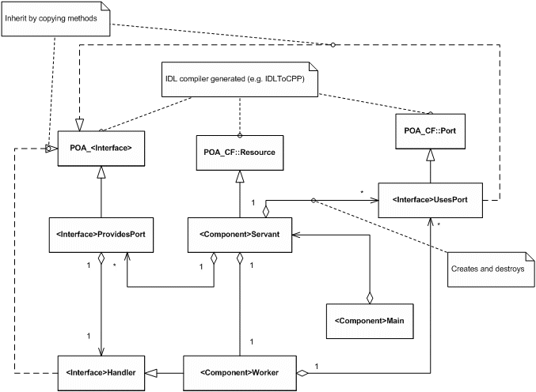

The following code pattern applies to both component and device code. The component CF Interface is CF::Resource.
The device CF Interfaces are: CF::Device, CF::LoadableDevice, CF::ExecutableDevice, and CF::AggregateDevice.
The generated source code follows a strict pattern:

The Main class manages startup, including
You don't need to modify the Main class.
The Servant class manages the following:
CF::Interface (inherits from POA_CF::Resource)You don't need to modify the Servant class.
The Worker class manages the following:
config_<propertyid>, query_<propertyid>, which are correctly casted from the configure/query methodsrunTest_<id>The Provides port implements the CORBA servant for the interface defined on the port. It receives CORBA calls and forwards them to the worker through C++ calls. The worker inherits from an abstract interface to implement the functionality of the operations on the port. The Port class performs no functional processing. It provides the connection boundary.
The abstract interface that the worker inherits from is called zceMyModule_MyInterfaceHandle. It has
operations MyInterface_MyOperation for every operation MyOperation on interface MyInterface in
module MyModule. The operations have the same parameters as the functions definition in the IDL file, with the addition of
one parameter (the first in the list), which is an integer portIdentifier.
The portIdentifier parameter allows the user to identify which port a particular function call came in on. This can be done
through an if-statement or a switch-statement for example. The switch-statement will provide better performance especially with a high volume
of messages.
The worker inherits from this port handler class.
The Provides port has a user interface to the CORBA servant. It receives CORBA calls and forwards them to the worker. The worker method looks at the port identifier and then calls the appropriate method <portname>_<method>. This allows the components to support multiple provides ports of the same interface.
The Uses port implements a CORBA client. It receives calls from the worker and forwards them to the CORBA object on the other end of
the connection. The uses port also implements the CF::Port interface as per the SCA standard. By default, the uses port only
supports single connections. You need to modify the uses port class if multiple definitions are required.
The uses port is available as an attribute within the worker class (myPort_). You can make C++ calls on this object and the
calls are directly translated into CORBA calls.
The class for the uses port can be found in <Source Directory>/ports/<Module>_<Interface>.